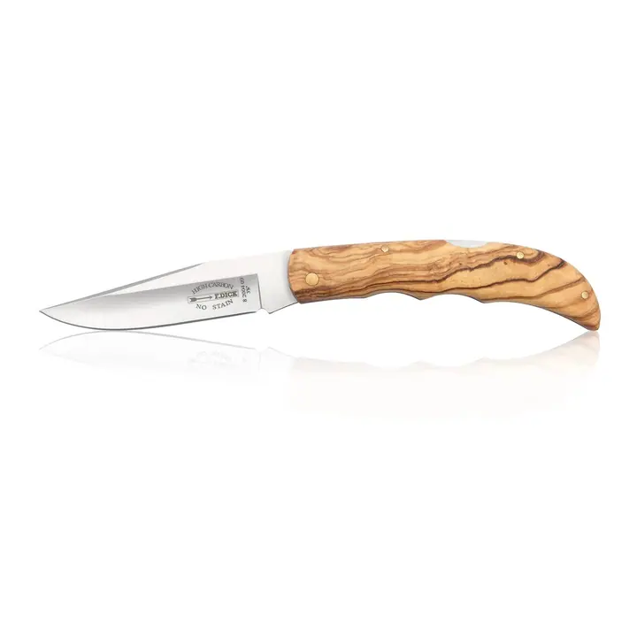
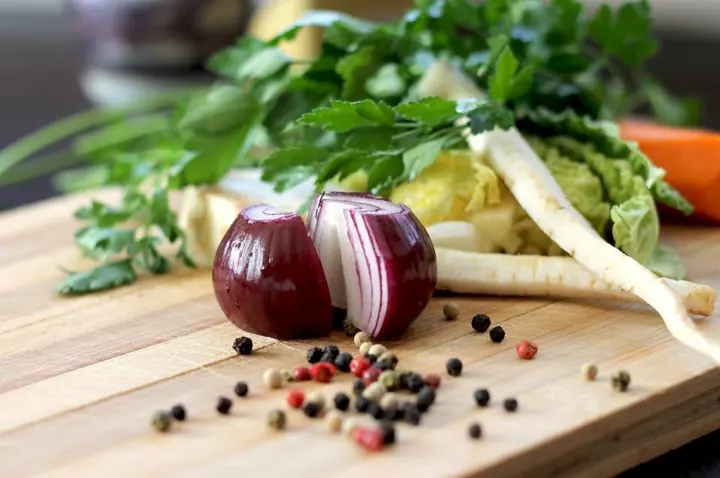
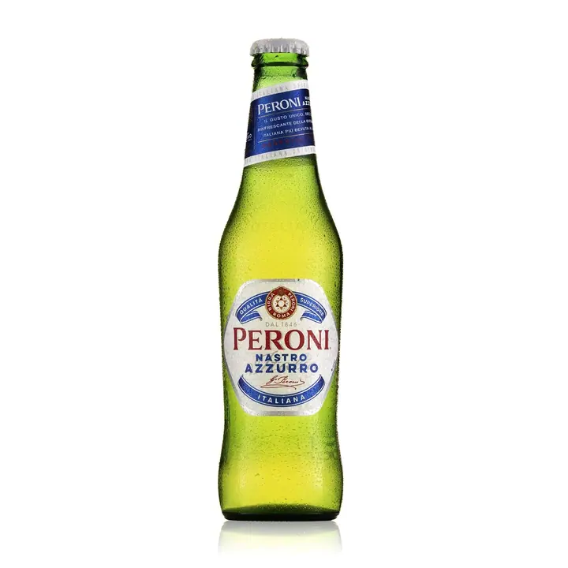
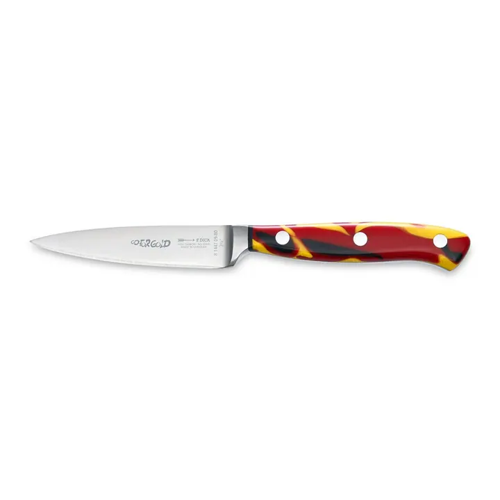

01 / 04
Fotky pro e-shop
Produkty fotím na bílém nebo jednobarevném pozadí, takže jsou připravené pro e-shop, web i katalog. Zákazník uvidí přesně to, co si kupuje.
Zeptat se na termín→






Ukažte zákazníkům, co chtějí vidět
Zeptat se na termín →(01) Ahoj
Jmenuji se Jan Krejčí a pod značkou Fotogo.cz fotím produkty pro e-shopy, weby, katalogy i reklamní letáky. Před objektivem jsem měl boty, nože, kosmetiku i pivo a ke každému produktu přistupuji individuálně.
(02) Co fotím
01 / 04
Produkty fotím na bílém nebo jednobarevném pozadí, takže jsou připravené pro e-shop, web i katalog. Zákazník uvidí přesně to, co si kupuje.
Zeptat se na termín→02 / 04
Reklamní fotky, ve kterých produkt dostane atmosféru a příběh. Hodí se na reklamní letáky, do katalogu i na sociální sítě.
Zeptat se na termín→(04) Postup
Od první zprávy po hotovou galerii.
Krok 1 z 4
Ve formuláři mi napíšete, jaký typ fotek potřebujete a kolik produktů zhruba máte. Obratem vám pošlu nezávaznou cenovou nabídku.
Krok 2 z 4
Domluvíme se na stylu fotek a na tom, jestli produkty nafotím u sebe, nebo přijedu s ateliérem k vám.
Krok 3 z 4
Každý produkt nafotím s ohledem na detail a na to, kde fotky použijete, ať už na bílém pozadí, v lifestyle podobě nebo v 360°.
Krok 4 z 4
Fotky upravím a rychle vám je předám. Pokud chcete, projdeme je před předáním spolu.
Z každého produktu se snažím dostat maximum.
(05) Za objektivem
Jsem nadšenec do produktové fotografie. Vím, že kvalitní fotky jsou pro prodej vašich produktů klíčové, a proto je vždy nafotím tak, aby zákazník viděl přesně to, co chce opravdu vidět.
Sídlím v pražských Modřanech, ale když je produktů hodně, přivezu ateliér přímo k vám do firmy a nafotím je na místě. Poradím si i s náročnějšími věcmi, jako je sklo nebo tekutiny, a kde je potřeba, postarám se i o postprodukci.
Jsem prověřeným partnerem Shoptetu, takže dobře vím, co e-shop od fotek potřebuje. Zakládám si na osobním přístupu, srozumitelné domluvě a rychlém dodání.
Jan
Jan Krejčí · Produktový fotograf
Cena záleží na typu fotek a počtu produktů. Pošlete mi poptávku přes formulář a já vám připravím nezávaznou cenovou nabídku.
Ano. Když máte široké portfolio produktů, přivezu ateliér k vám a nafotím vše na místě.
Určitě. Jsem prověřeným partnerem Shoptetu a fotky připravím tak, aby na e-shopu dobře fungovaly.
Ano, fotím i lahve, parfémy a kosmetiku, kde je potřeba pohlídat odlesky a průhlednost.
(07) Kontakt
Napište pár vět o tom, co si představujete, a termín, který se vám hodí.